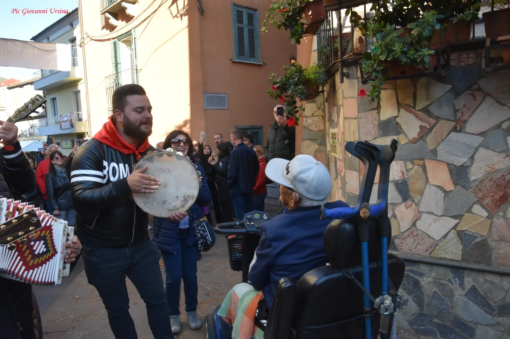
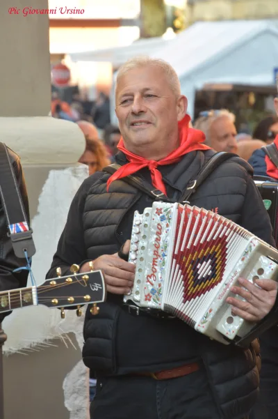
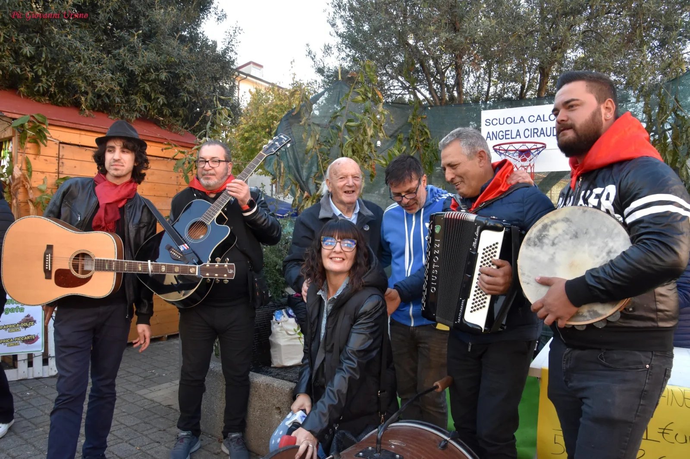
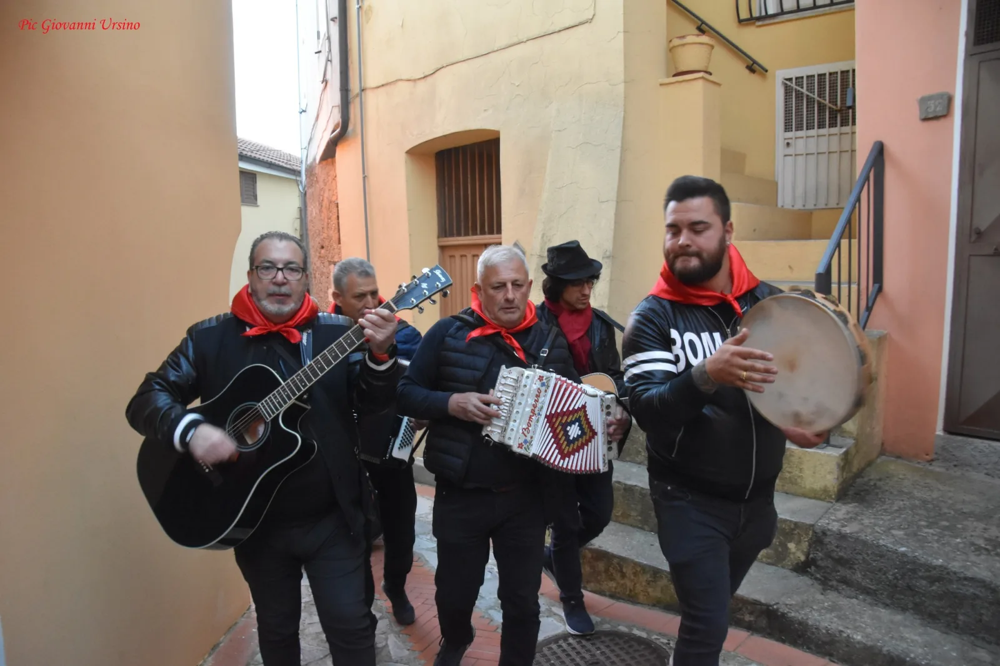
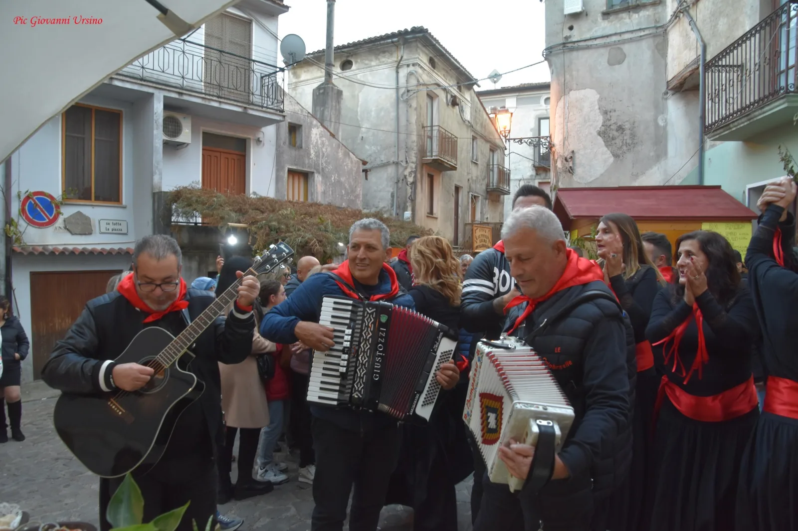
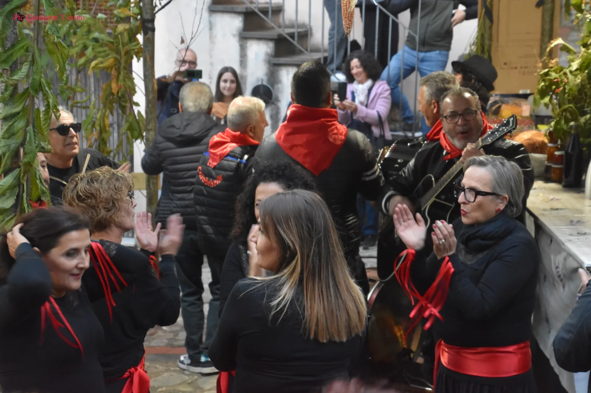
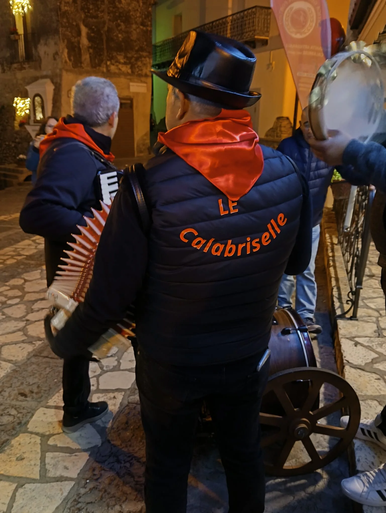
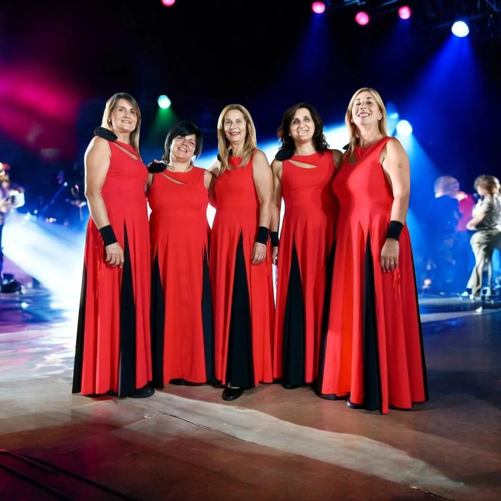
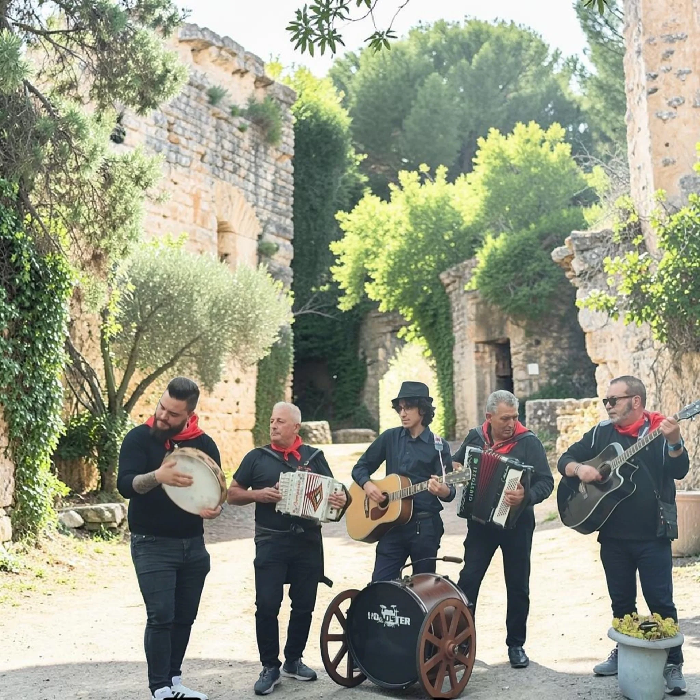

❮
❯
Gruppo itinerante di musica e danza popolare
← Grill Band e le Calabriselle
Le Calabriselle è il gruppo itinerante che unisce il corpo di ballo omonimo ai musicisti della tradizione popolare calabrese. Uno spettacolo completo di danza, musica e canto che porta nelle piazze, nelle sagre e negli eventi l’energia festosa della Calabria, con i colori e i ritmi della tarantella e delle danze popolari.
Le ballerine, in abito tradizionale rosso, animano la scena con coreografie che coinvolgono il pubblico; i musicisti accompagnano con fisarmonica, organetto, chitarre, voce e tamburello, creando un’esperienza autentica e coinvolgente.
Il gruppo di ballo Le Calabriselle è composto da ballerine specializzate nelle danze popolari calabresi. Durante ogni esibizione portano in scena gestualità, passi e costumi della tradizione, con il caratteristico vestito rosso che identifica il gruppo.
10 ballerineLa formazione musicale del gruppo itinerante:

Ernesto Feraco Organetto






Per info, concerti ed eventi con il gruppo itinerante Le Calabriselle:
Tel: +39 329 1185540 (Nunzio)